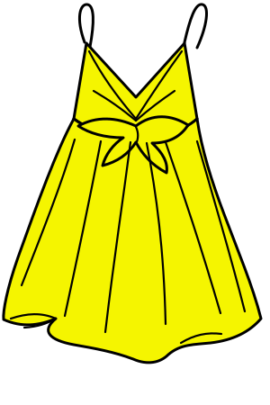

Lieblingsstücke neu entdecken
Kleidung, die nicht mehr getragen wird, kann mit einem neuen Design wieder Freude machen.
Wir sammeln Kleidung, geben ausgewählten Stücken ein neues Design und unterstützen gemeinsam mit Caritas einen guten Zweck.
Entdecke Modified. ↘
Modified. gibt ausgewählten Kleidungsstücken eine zweite Chance. Aus Bestehendem entsteht etwas Neues – kreativ, bewusst und mit sozialem Mehrwert.
Kleidung, die nicht mehr getragen wird, kann mit einem neuen Design wieder Freude machen.
Wir möchten zum bewussteren Umgang mit Kleidung inspirieren und zeigen, dass Wiederverwendung kreativ sein kann.
Ein Teil der gesammelten Kleidung wird an Caritas gespendet. Ausgewählte Stücke werden von Modified. upgecycelt.
Entdecke Einzelstücke mit einer neuen Geschichte.
Wir bereiten gerade unsere ersten upgecycelten Stücke vor. Schau bald wieder vorbei!
Wir wollen zeigen, dass Kleidung mehr als einen Lebenszyklus haben kann – und dass gemeinsames Handeln etwas bewirkt.
Gebrauchter Kleidung eine weitere Möglichkeit geben, statt sie vorschnell auszusortieren.
Mit Design und handwerklicher Arbeit aus vorhandenen Stücken etwas Eigenständiges machen.
Kleiderspenden und die Zusammenarbeit mit Caritas in den Mittelpunkt stellen.
Ein einfacher Kreislauf: sammeln, auswählen, neu gestalten.
Du bringst saubere, frisch gewaschene Kleidung zur angekündigten Sammelaktion.
Ein Teil der Kleidung wird gespendet. Geeignete Stücke wählen wir für eine kreative Überarbeitung aus.
Ausgewählte Kleidungsstücke werden verändert und erhalten ein neues Design.
Die neu gestalteten Stücke werden hier im Shop präsentiert, sobald der Verkauf startet.
Das Wichtigste rund um Spenden, Upcycling und Modified.
Bitte bringe saubere und frisch gewaschene Kleidung mit. Weitere Annahmekriterien und Sammeltermine werden vor der Aktion bekanntgegeben.
Ein Teil wird an Caritas gespendet. Ausgewählte Stücke werden von Modified. kreativ überarbeitet und erhalten ein neues Design.
Der Shop zeigt derzeit ein Design-Mock-up. Echte Produkte, Bezahlung und Bestellabwicklung sind noch nicht freigeschaltet.
Schreib uns über das Kontaktformular, wenn du Fragen hast oder beim Projekt mitwirken möchtest.
Fragen, Ideen oder Lust mitzumachen? Wir freuen uns, von dir zu hören.
Nutze das Formular, um eine Nachricht vorzubereiten. Es wird noch kein automatischer Versanddienst verwendet.
Modified.
Ein Projekt für bewusstere Kleidung.